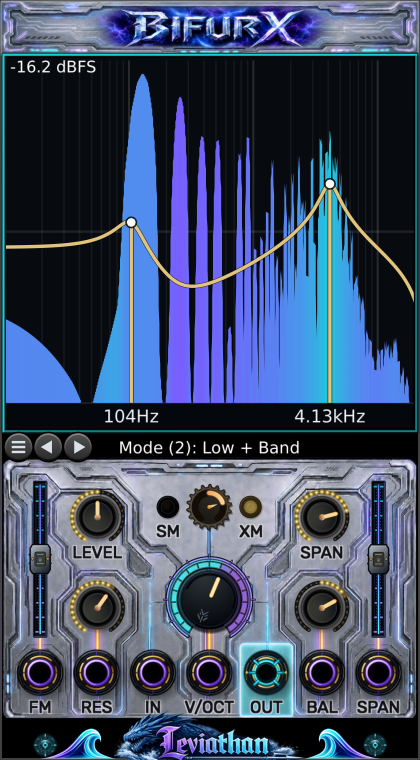

Add Bifurx
Open Rack's module browser, search for Bifurx or the Leviathan Pro brand, and place it in the rack.
Leviathan Pro for VCV Rack 2
A dual-focus multimode filter that can carve, split, resonate, couple, and reveal a signal in motion.
Two state-variable filter cores. Ten processing topologies. One analysis-only mode. A control surface built to make the relationship between them visible.


Start here
Bifurx is part of the Leviathan Pro plugin, not a standalone application. Add it to a running Rack patch, then use this neutral path to hear its architecture before inviting the sea monsters.
Open Rack's module browser, search for Bifurx or the Leviathan Pro brand, and place it in the rack.
Connect an oscillator, sampler, or other mono source to IN. Connect OUT to a mixer, VCA, or audio interface path.
Set LEVEL and BAL to noon, SM/XM to center, both sliders to center, RES near 30%, and SPAN around 12-24 semitones.
Start with Low + Low, Band + Band, or High + Low. Use the arrows to cycle or the menu button for direct selection.
Turn FREQ to move both filters. Increase SPAN to pull them apart. Add RES, then lean BAL toward the focus you want to foreground.
Core concept
FREQ defines a center pitch. SPAN creates a lower focus A and an upper focus B around that center. The selected mode decides which response each core produces and whether the cores run in parallel or in cascade.
Panel tour
The numbered map groups related hardware so the operating surface can be read in seconds.
10 Hz to 20 kHz view; 48 dB vertical window
Shows the live output spectrum, the nominal gold filter curve, the two focus frequencies, and the current dBFS ceiling.
11 modes
Use the left and right arrows to step through modes. Press the menu button to select a mode directly. The strip names the active mode.
Silence to clean unity to driven
Attenuates below noon. Noon is unity and clean. Above noon adds gain; nonlinear drive begins around the upper third and grows toward maximum.
Low damping to high resonance
Raises both filter resonances. BAL redistributes emphasis between the lower and upper core. Optional self-oscillation begins near 80% when enabled.
4 Hz to 28 kHz control range
Sets the geometric center between the two filter frequencies. The large halo and the display markers provide fast visual feedback.
Self-modulation to neutral to cross-modulation
Left makes each core modulate its own cutoff (SM). Right makes the cores modulate one another (XM). The amber lights show side and intensity.
0 to 96 semitones (0 to 8 octaves)
Separates the lower A and upper B frequencies symmetrically around FREQ. Near the frequency limits, Bifurx shifts the pair inward to preserve the requested separation.
Lower focus to centered to upper focus
Favors the lower or upper core and shifts resonance emphasis. In parallel modes it also weights the two mixed responses.
-100% to +100%
Set modulation depth and polarity for their matching bottom-row jacks. Center is zero; the illuminated rail shows direction and amount.
FM, RES, IN, V/OCT, OUT, BAL, SPAN
One audio input, one audio output, and five modulation inputs. Bifurx processes channel 1 and produces a monophonic output.
CV and patching
Panel knobs act as offsets. Where an attenuverter is present, it scales and can invert the matching input.
| Port | Role | Range / scaling | Behavior |
|---|---|---|---|
| IN | Audio | Typical Rack audio (+/-5 V) | Signal to filter. In Display Only mode it is passed directly to OUT. |
| V/OCT | Pitch | 1 V per octave; accepted range +/-10 V | Adds directly to the center-frequency pitch. It is sample-accurate and has no built-in glide. |
| FM | Bipolar exponential FM | +/-10 V, scaled by FM slider | At full positive depth, +1 V moves both foci up one octave. Negative depth inverts the motion. |
| RES | Unipolar additive CV | 0 to 8 V | Adds resonance above the RES knob. Negative voltage is ignored; the result is clamped at maximum. |
| BAL | Bipolar additive CV | +/-5 V | At full scale, moves balance across its entire range. Negative favors A/lower; positive favors B/upper. |
| SPAN | Bipolar additive CV | +/-10 V, scaled by SPAN slider | At full slider depth, +/-10 V can sweep the complete span range. Reverse the slider to invert. |
| OUT | Audio | Monophonic | Filtered output, or direct input pass-through in Display Only and Rack bypass. |
Mode atlas
A is always the lower focus and B the upper focus. In parallel modes, BAL changes both mix weight and resonance emphasis. In cascade modes, BAL mainly redistributes resonance emphasis between the two stages.
| # | Mode | Topology | Routing | Musical character |
|---|---|---|---|---|
| 1 | Low + Low | Cascade | LP(A) -> LP(B) | A steep, weighty low-pass. SPAN creates two corners or a broad shoulder; RES adds one or two emphasized edges. |
| 2 | Low + Band | Parallel | LP(A) + BP(B) | Low-frequency body with an upper resonant band. Useful for animated basses and formant-like accents. |
| 3 | Notch + Low | Cascade | Notch(A) -> LP(B) | A lower spectral cut inside a low-passed field. Excellent for hollow motion without losing the fundamental region. |
| 4 | Notch + Notch | Cascade | Notch(A) -> Notch(B) | Two moving rejection bands. Wide SPAN produces surgical dual cuts; modulation turns it into a phasey spectral comb. |
| 5 | Low + High | Parallel | LP(A) + HP(B) | Keeps the outside bands and recesses the middle. SPAN controls the width of the spectral valley. |
| 6 | Band + Band | Parallel | BP(A) + BP(B) | A dual resonator with two tunable peaks. One of Bifurx's strongest vocal, percussion, and tuned-noise modes. |
| 7 | High + Low | Cascade | HP(A) -> LP(B) | A true band window: A defines the lower edge and B the upper edge. SPAN is effectively the window width. |
| 8 | High + Notch | Cascade | HP(A) -> Notch(B) | Removes lows, then cuts an upper band. Useful for bright, hollow textures and moving air bands. |
| 9 | Band + High | Parallel | BP(A) + HP(B) | A lower resonant band plus open upper frequencies. Adds edge without abandoning a pitched focus. |
| 10 | High + High | Cascade | HP(A) -> HP(B) | A steep high-pass with two controllable corners. Use it for decisive low-end removal and rising sweeps. |
| 11 | Display Only | Pass-through | IN -> OUT | Turns Bifurx into a spectrum monitor. Filtering, drive, and limiting are bypassed in steady state; the FM slider shapes the display color response. |
Live display
The gold line is a stable guide to the selected filter topology. It does not attempt to predict every nonlinear result from hot LEVEL, SM/XM coupling, self-oscillation, or the output limiter.
Enable Show Module Response when you want an additional measured input-to-output line. Its usefulness depends on the source exciting the frequencies being measured.
In Display Only, the curve and focus markers disappear, the frequency axis is labeled at 100 Hz, 1 kHz, and 10 kHz, and the filled spectrum becomes a clean analyzer view.
Right-click settings
Settings are saved with the module. Graphics choices do not alter the audio path.
| Setting | Choices / default | Use |
|---|---|---|
| Modulation Quality | Balanced (/16), High (/8), Exact (/1) | Controls the update rate for RES, BAL, and SPAN modulation. Use Exact for audio-rate timbral CV; it costs the most CPU. V/OCT and FM remain sample-accurate. |
| Color Scheme | Six palettes | Default Purple/Cyan, Classic Green/Red, Monochrome, Fire, Retro Amber, and Retro Green. |
| Three-color FFT gradient | On by default | Adds a distinct neutral color between the low and high response colors. Turn it off to blend the spectrum directly between the two palette endpoints. |
| Legacy visuals | Off by default | Uses the earlier panel and label treatment while retaining the current audio engine. |
| Renderer | OpenGL SHDR by default | Choose OpenGL SHDR, OpenGL, or NanoVG. This affects the display only, never the audio path. |
| High Resonance Self-Osc | Off by default | Allows both cores to sustain controlled oscillation as RES rises beyond roughly 80%. LEVEL is an input control, not an output VCA. |
| Soft Limiting | On by default | Keeps ordinary signals linear through +/-4 V, then approaches a +/-5 V ceiling. Disable it for unrestricted finite output. |
| Dynamic FFT Scale | On by default | Moves the 48 dB display window to follow signal level. Turn it off for a fixed 0 dBFS top. |
| Show Module Response | Off by default | Adds a measured input-to-output response line over the live spectrum. It complements the nominal gold curve. |
| Low Latency Offload | Off by default | Raises visual publication cadence for tighter display tracking, with some additional visual-thread cost. |
| Disable Visual Offload | Off by default | Moves display preparation back to the UI path. Use it only for troubleshooting unusual graphics or worker behavior. |
Patch recipes
Treat the values as launch coordinates rather than commandments.
PATCH 01
Mode: Low + Low
Set: LEVEL noon; RES 25-40%; SPAN 12-24 st; BAL center; SM/XM center.
Animate: Sweep FREQ manually or patch a slow envelope to FM with a small positive depth.
The cascaded cores create a decisive rolloff while the separated corners keep the sweep larger than a single ordinary low-pass.
PATCH 02
Mode: Band + Band
Set: RES 55-75%; SPAN 12-36 st; BAL center; LEVEL at or just above noon.
Animate: Send a sequencer to V/OCT and a slow bipolar LFO to BAL. Add modest XM for unstable vowel motion.
The two band-pass peaks track together while BAL makes the apparent formant lean between them.
PATCH 03
Mode: High + Low
Set: SPAN 18-48 st; RES 20-50%; LEVEL noon.
Animate: Patch note pitch to V/OCT. Modulate SPAN slowly to open and close the window around that pitch.
The lower high-pass and upper low-pass form a tunable corridor instead of a conventional single-center band-pass.
PATCH 04
Mode: Notch + Notch
Set: SPAN 18-60 st; RES 35-65%; BAL slightly off center.
Animate: Use slow FM for a coordinated sweep and a second LFO on SPAN for breathing separation.
Two deep cuts move as a coupled structure, exposing and hiding material without simply darkening it.
PATCH 05
Mode: Low + Band or Band + Band
Set: RES 65-85%; LEVEL 55-75%; begin with SM/XM near center.
Animate: Turn gradually toward XM for mutual motion or SM for rougher, more internally folded movement. Level-match downstream.
Coupling depth grows with resonance and the internal signal, so small moves near the center can become large at hotter settings.
PATCH 06
Mode: Display Only
Set: Patch the signal through IN and OUT; leave filter controls anywhere.
Animate: Use Dynamic FFT Scale for quiet signals. Move the FM slider left for a cooler, slower color rise or right for a hotter, faster rise.
The audio passes through unchanged after the short mode transition, while the display remains fully active.
Troubleshooting
Confirm audio reaches IN and OUT reaches a mixer. Raise LEVEL above zero. In self-oscillation patches, remember LEVEL does not act as an output VCA.
Right-click Bifurx and try Renderer -> OpenGL, then NanoVG. The renderer setting does not change the sound.
Dynamic FFT Scale intentionally moves the 48 dB window. Disable it when you need a fixed 0 dBFS reference.
Choose Modulation Quality -> Exact. Balanced and High deliberately update these slower controls at divided rates.
This is intentional. Bifurx shifts the center inward when necessary so both filter frequencies stay valid and the requested separation is preserved.
Bifurx uses a roughly 3 ms fade-out/switch/fade-in transition to avoid a click when changing topology or Soft Limiting.
Resonance, parallel-mode summing, drive, and coupling can all add energy. Return LEVEL and SM/XM to noon, reduce RES, and level-match after Bifurx.
That is intentional: in Display Only, the FM slider becomes a visual color-shape control. It does not alter the pass-through audio.
Reference